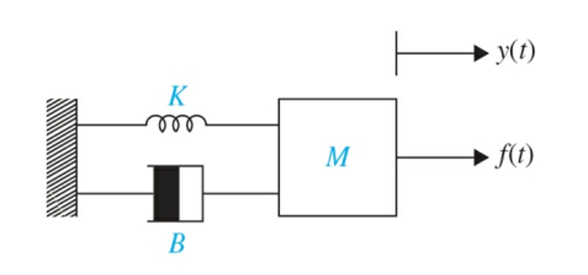
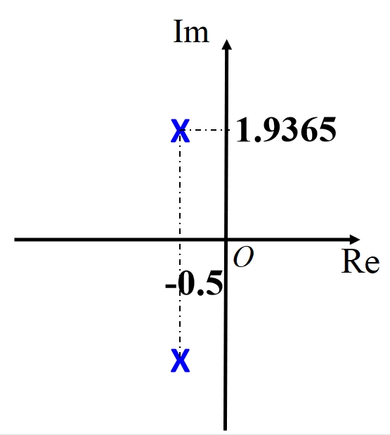
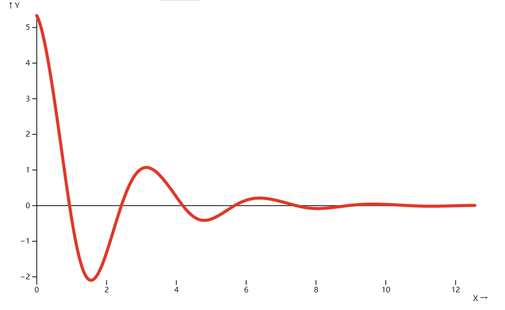
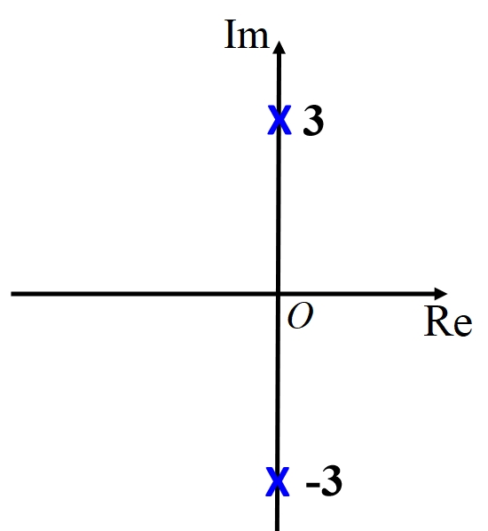
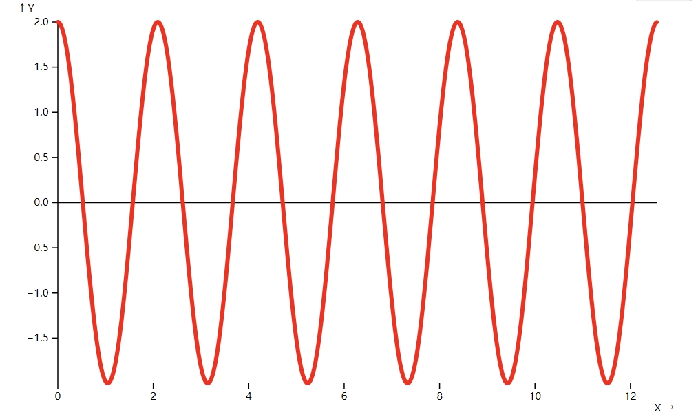
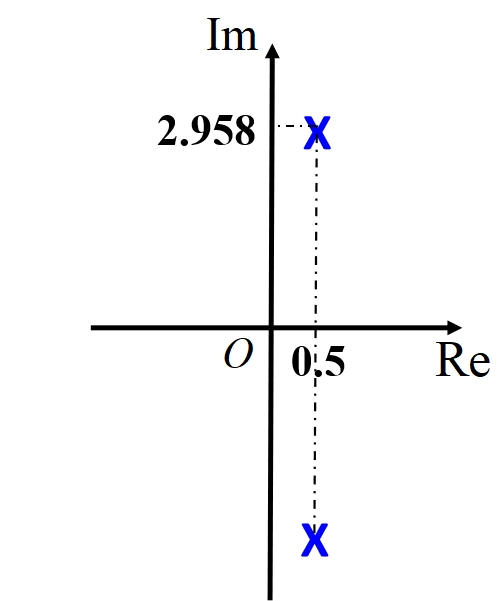
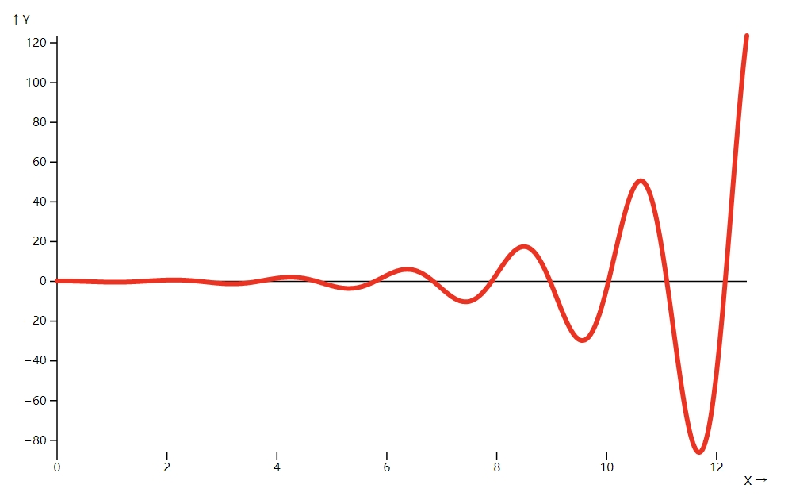
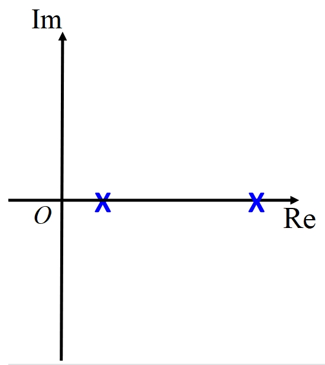
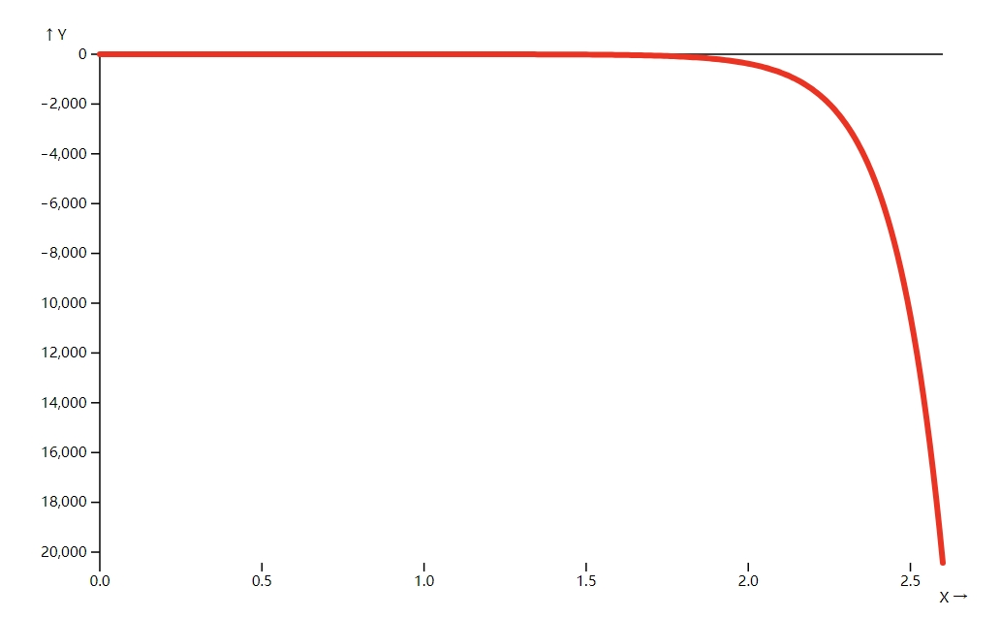

矩阵特征值\(\boldsymbol{\leftrightarrow}\)系统响应
引言
相信大家对以下两个公式并不陌生。
\[M\frac{d^2 y}{dt^2}+B\frac{dy}{dt}+K y = 0\]
\[|\lambda I - A|=0\]
第一个式子是阻尼振动的方程，第二个是求矩阵特征值的方程。
在接下来的例子中我们将看到，如何通过矩阵的特征值，来分析线性零输入响应系统的状态。
弹簧、阻尼与质量块模型

\[M\frac{d^2 y}{dt^2}+B\frac{dy}{dt}+K y = 0\]
令
\[x_{1}=y,\quad x_{2}=y^{\prime}\]
\[X=\begin{bmatrix}x_{1} \\ x_{2}\end{bmatrix}\]
则上述二阶ODE化为
\[X' = AX\]
\[A=\begin{bmatrix}0 & 1 \\ -\frac{K}{M} & -\frac{B}{M}\end{bmatrix}\]
\[y=\begin{bmatrix}1 & 0\end{bmatrix}X\]
基物课上学过，通过判断\(\Delta =B^{2}-4MK\) 的正负性可分为过阻尼、临界阻尼和欠阻尼三种情形。
但此处不详细考虑这三种情形，而是按照\(B\)的正负性分为正阻尼（上述三种都属于此类）、零阻尼和负阻尼，
分别对应\(B>0\)、\(B=0\)和\(B<0\)。
正阻尼（以欠阻尼为例）
设\(M=1,\quad K=4,\quad B=1\)
\[A=\begin{bmatrix}0 & 1 \\ -4 & -1\end{bmatrix}\]
计算得到A的一对共轭特征值为
\[\lambda_{1}=-0.5+1.9365i,\quad v_{1}=\begin{bmatrix}0.894 & -0.447\end{bmatrix}^{T}\]
\[\lambda_{2}=-0.5-1.9365i,\quad v_{2}=\begin{bmatrix}-0.447 & 0.894\end{bmatrix}^{T}\]
当存在复特征值\(\lambda=a+bi\)时，可得到两个线性无关的解（证明略）
\[y_{1}(t)=\begin{bmatrix}(Re\nu)\cos bt-(Im\nu)\sin bt\end{bmatrix}e^{at}\]
\[y_{2}(t)=\begin{bmatrix}(Re\nu)\cos bt+(Im\nu)\sin bt\end{bmatrix}e^{at}\]
设初始值\(x(0)=\begin{bmatrix}5 \\0\end{bmatrix}\)，即初始位置为5，初速度为0。计算线性组合的系数，最终得到
\[y(t) = e^{-0.5t}*((5\cos(1.9365t)) + 1.291\sin(1.9365t))\]
或者使用matlab直接求解二阶常微分方程得到
\[y(t) = e^{-t/2}/3*((15\cos(15^{1/2}*t/2)) + 15^{1/2}\sin(15^{1/2}*t/2))\]
代码如下
% matlab code
syms y(t) M B K
eqn = M*diff(y,t,2) + B*diff(y,t) + K*y == 0;
Dy = diff(y,t);
cond = [y(0)==5, Dy(0)==0];
ySol(t) = dsolve(eqn,cond)
注：动画持续约六个周期，重播需刷新网页
零阻尼
设\(M=1,\quad K=9,\quad B=0\)
计算得到A的一对共轭特征值为
\[\lambda_{1}=3i,\quad v_{1}=\begin{bmatrix}-0.3162i & 0.9487\end{bmatrix}^{T}\]
\[\lambda_{2}=-3i,\quad v_{2}=\begin{bmatrix}0.3162i & 0.9487\end{bmatrix}^{T}\]
方程解为
\[y(t) = 5\cos(3t)\]
负阻尼（虚特征根）
设\(M=1,\quad K=9,\quad B=-1\)
计算得到A的一对共轭特征值为
\[\lambda_{1}=0.5+2.958i,\quad v_{1}=\begin{bmatrix}0.0527-0.3118i & 0.9487\end{bmatrix}^{T}\]
\[\lambda_{2}=0.5-2.958i,\quad v_{2}=\begin{bmatrix}0.0527+0.3118i & 0.9487\end{bmatrix}^{T}\]
方程解为
\[y(t) = e^{0.5t}(5\cos(\sqrt{35}/2 t)-\sqrt{35}/7\sin(\sqrt{35}/2 t))\]
负阻尼（实特征根）
设\(M=1,\quad K=9,\quad B=-8\)
计算得到A的特征值为
\[\lambda_{1}=1.3542,\quad v_{1}=\begin{bmatrix}-0.5940 & -0.8045\end{bmatrix}^{T}\]
\[\lambda_{2}=6.6458,\quad v_{2}=\begin{bmatrix}-0.1488 & -0.9889\end{bmatrix}^{T}\]
方程解为
\[y(t) = e^{(4-\sqrt{7})t}(10\sqrt{7}/7+5/2)+e^{(\sqrt{7}+4)t}(5/2-10\sqrt{7}/7)\]
总结
由上述四组实验可知，当特征值的实部的正负性决定了观测量是发散、不变还是收敛，虚部的大小反应了震荡的强度。
Summary
| 特征值 |
系统变化趋势 |
概括 |
|  |
 |
震荡收敛 |
|  |
 |
震荡 |
|  |
 |
震荡发散 |
|  |
 |
发散 |
附录
参考
- 《测控技术与仪器验证探索》课件
- 微积分讲义
- MDN web doc
作者
- 周智扬 未央-精21
- 电话/微信：13651804190
- 邮箱：zhou-zy22@mails.tsinghua.edu.cn